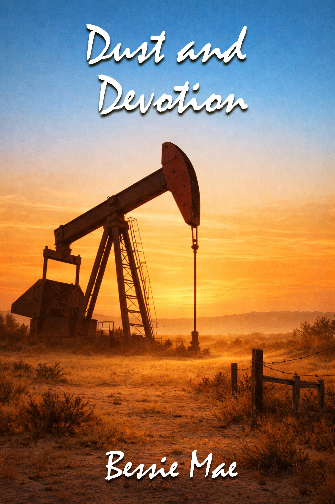

Dust and Devotion: A West Texas Tale of Grit and Grace is a powerful story about legacy, survival, and the fight to hold onto what matters most. When Callie Rigby returns to her family's struggling West Texas ranch, she is met with more than memories; she inherits debt, responsibility, and a ticking clock.
With only thirty days to save the land her father built, she must navigate a world far removed from the city life she once knew. As corporate interests threaten to take over the land, Callie finds herself at odds with Boone West, a man deeply rooted in tradition and wary of change.
Their clashing perspectives mirror a larger battle — progress versus preservation, profit versus purpose. Set against the harsh yet breathtaking backdrop of West Texas, this story explores the deep connection between people and the land they love. It is a tale of grit in the face of adversity, devotion in the face of loss, and the courage it takes to rebuild not just a home, but oneself.
“Her life was not easy. It was marked by struggle, sacrifice, and ultimately loss. Yet, like the unforgiving landscapes that inspired Dust and Devotion, her story was never about defeat — it was about endurance.”
Every page of Dust and Devotion is built on a tension as old as the land itself — between what we inherit and what we choose to carry forward. These are the threads that hold the story together.
Dust and Devotion is a beautifully written story that captures the raw essence of resilience. With vivid imagery and emotionally grounded characters, it delivers a powerful narrative about legacy, love, and the courage to rebuild.
A compelling blend of heart and hardship, this novel brings West Texas to life in a way that feels both intimate and expansive. Callie's journey is inspiring, and the story's emotional depth lingers long after the final page.
This is more than a story; it's an experience. Dust and Devotion explores themes of family, sacrifice, and perseverance with authenticity and grace, making it a must-read for anyone who values meaningful storytelling.
Step into West Texas. Meet Callie Rigby. Feel the weight of legacy and the quiet power of starting over.